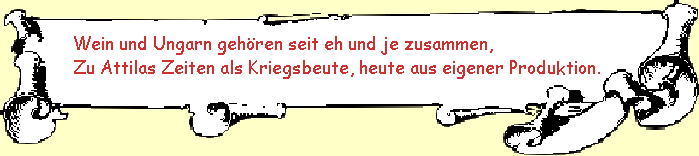
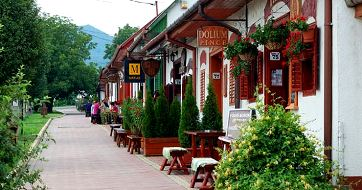
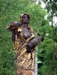
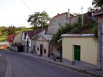
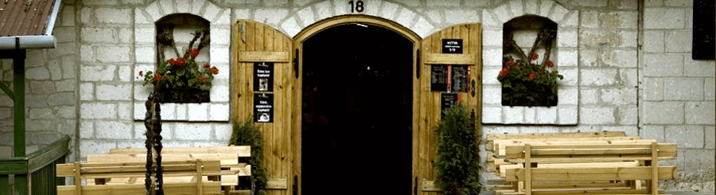
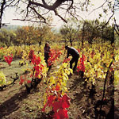
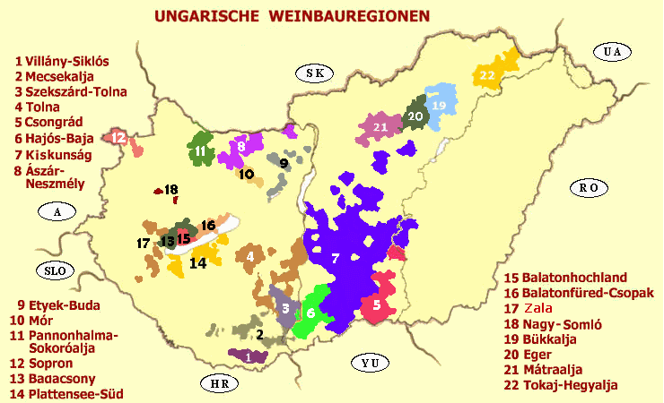

|
|
|  |
| |
Bedenke: Dieser Spruch gilt ähnlich für
den deutschen Wein, denn erst nach der Zerstörung Roms wurde der
römische Weinbau germanisiert.
|
In vino veritas - Im Wein liegt die Wahrheit - Über Wein wussten die alten Ungarn schon lange
vieles, als es einem gewissen
Geheimdiener der Kammer (=reisender
Steuerfahnder, sprich: Spitzel der Kammer) unterwegs in der
Toscana einfiel, seine Meinung über
den Wein zu
beschreiben wie folgt:
|
Ein Mädchen und ein Gläschen
Wein,
sind die Retter in der
Not,
denn wer nicht trinkt und wer nicht
küsst,
der ist
so gut wie tot.
(Johann Wolfgang von Goethe)
|
VORWORT
Den Ursprung der Weinherstellung datieren Archeologen vor rd.
10.000 Jahren
in Georgien. In den in die Erde eingebauten und von der
Erde klimatisierten Amphoren ließ man damals den Rebsaft ohne
weiteres Zutun vergären. Nur selten bekam der Wein einen Stich und
das Klima ermöglicht dort auch heute noch diese Art der
natürlichen Weinherstellung.
Die alten Griechen
waren die erste Nation mit einer Weinkultur. Anfangs war der Wein
mit Gold aufgewogen und dementsprechend für einige vorbehalten.
Die seefahrenden Griechen handelten lange mit Wein in Amphoren,
vergoren später den eigenen Most in Holzfässern. Da auf dem Balkan
manche Klimaepochen der Rebe nicht ganz zusagten, entstand
dort eine besondere Herstellungsmethode von der Pflege der Rebe
über die Kelterung bis zum fertigen Wein. Davon wird das Harzen,
eine natürliche, nicht mehr unumstrittene Konservierungsmethode
bis heute gepflegt.
Auch im Römischen Reich entstand eine besondere Weinkultur. Die
Grundlage dafür lieferten die Griechen, die gleichzeitig
dazu beitrugen, dass die Weinherstellung im gesamten
Mittelmeerraum verbreitet wurde. Als der Wein
eines Tages für jeden zugänglich war, unterging Rom in
Demokratie und Suff.
Die besten Weinbauregionen
Ungarns waren seit dem 17. Jahrhundert deutsche Siedlungsgebiete. Die Neubürger
sind nicht in Weinbaugebiete eingewandert, sondern machten ihre
Felder nebenbei auch für die Rebe urbar. Rebe hatten die Ungarn
schon früher angebaut, allerdings nur die Mönche einiger Abteien,
wie z.B. Pannonhalma, Zirc oder Tihany. Die deutschen Siedler haben ihre, in der alten Heimat von den
Römern übernommene Weinbautradition nach Ungarn mitgebracht und dort
weiter gepflegt.
Trotz Vertreibung leben da auch heute noch viele "Donauschwaben", wie
man die Deutschen in dieser Gegend bezeichnet, allerdings eher nur
noch die ganz alte Generation. Viele Ungarn, die ihre Weinkeller in der roten
Ära als Entschädigung oder wie auch immer geschenkt übernahmen, versuchen mit mehr oder weniger
Erfolg auf den Spuren deutscher Tradition zu reiten. Trotz alledem
findet man noch deutsche Spuren beispielsweise in den
Kellerdörfern
Hajós und Boly im Weinbaugebiet oder in Villánykövesd im
Weinbaugebiet
. Hier bietet sich ein Besuch im
donauschwäbisch anmutenden
an.
|
|
 |
Links sieht man eine
Weinkellerreihe in Györköny, im Weinbaugebiet
,
das einst von deutschen Siedlern gegründet wurde, rechts eine Kellereireihe in Villány, im südlichen Weinbaugebiet
,
eine weitere Gegend mit deutscher Weinbautradition.
- Die Weinkultur haben die Donauschwaben in ihre Siedlungsgebiete nach Ungarn mitgebracht.
Sie kamen aus Landschaften, wo der Weinbau seit der Römerzeit
lange Tradition hatte, wie Bayern, Hessen, Rheinland, Baden
und sogar aus Elsass und Lothringen, die damals noch
deutschsprachig waren.
|
|
 |
Auch die Ungarn haben
Weinkellerreihen im 19.20. Jahrhundert gebaut, die bestenfalls so aussehen, wie am
Bild rechts im Weinbauort Eger, rd. 60 km nordöstlich von
Budapest. Rd. 200 Weinkeller gibt es dort heute im Tal der Schönen
Frauen. Die Skulptur am Bild links stellt das Symbol dieser Bezeichnung dar.
Klicke auf die Bilder! |
 |
Von den rd. 200
Weinkellern im Tal der Schönen Frauen haben sich etwa 18
privilegierte Kellerbesitzer mit Brüsseler Unterstützung abgesondert und lukrative
Kellerlokale dort ausgebaut, wohin die Touristen hingeleitet werden.
Wer den Zuschlag für die Unterstützung aus Brüssel bekam,
entschieden die in Ungarn gerade machthabenden politischen
Parteiführungsgremien nach der sog. politischen Wende. Dabei
wurden neue Weinbaronen erkoren, alte einheimische Weinbauer
gerieten deutlich ins Hintertreffen. Warum die anderen
Weinkeller keine Förderung aus Brüssel erhielten, das ist ein
Politikum in Ungarn, wo die Landesregierung heute alles
mögliche unternimmt, landeseigene Produkte als Ungarikum zu
titulieren für weitere Unterstützung aus Brüssel für
vermeidlich landestypische Produkte, zugleich für die
Abschottung ausländischer Konkurrenten aus Ungarn.
Ein
von den ca. 18 vorgepreschten Weinkellerlokalen im Tal der Schönen Frauen in
Eger sieht so aus:
|
|
 |
Was die neuen
Kellerbesitzer verkaufen, darüber steht nur in den Himmel geschrieben, ob
hier eingekellert und überhaupt ihr eigener Wein sei. Tipp:
kurz weiterfahren im Tal der Schönen Frauen und man
stößt an die weniger lukrativ aussehenden, familiär
betriebenen Weinkeller der heimischen Bauer mit langer
Weinbautradition, die froh wären, wenn sie ihren in der Tat
echten Wein
verkaufen könnten und daher nie das anbieten werden, was Sie auch im
Supermarkt bekommen.
|
EU-BEITRITT - ein Fortschritt? - Seit
der Vorbereitung zum EU-Beitritt griffen die Ungarn zu
Hilfsmitteln, die aus Brüssel gesteuert EU-weit angewendet
werden
sollen, wie Gärzucker, Gärhefe,
Wärmebehandlung in Edelstahlkesseln zur
zeitlichen Steuerung der Gärung (typisch für die
französischen
Beaujolais und Chateauweine oder auch bei den fränkischen
Bocksbeutel-Spezialitäten) Restzucker Zugabe vor der
Flaschenabfüllung
..... und noch vielmehr Technologie müssen die
EU-Neubürger anwenden,
damit sie am Markt bestehen können.
|
KLIMA IST EIN WEINFAKTOR
Die Rebe ist eine
tropische Pflanze. Ihr künstliches Wachstumsgebiet erstreckt sich
in Mitteleuropa nach Norden bis zu den Karpaten in der Slowakei.
Das ist heute die Nordgrenze von Ungarn und diese nördliche
Klimagrenze für die Rebe ist in Deutschland ebenso vorhanden, etwa
in der Mitte von Hessen.
Wein ist in Frankreich ein wichtiger Wirtschaftsfaktor. Nicht
zufällig haben die Franzosen den EU-Beitritt Spaniens gut zwei
Jahrzehnte lang hinausgezögert, denn der Tafelein aus dem Norden
von Spanien
erreicht oft die Qualität gut gehüteter Chateauweine aus dem Süden
von Frankreich.
|
Guten Wein aus dem Traubensaft auf natürlichem Weg gibt es jedoch
südlich der südlichen Grenze von Ungarn und das ist in Deutschland
genauso.
Schon die Römer bauten die
Rebe
in unseren Landschaften an, allerdings in einer rd. 2 Grad
wärmerer Klimaepoche, die von Klimatologen als "Warme Klimaepoche
der Römerzeit" bezeichnet wird.
In
Deutschland und in Ungarn benötigt man eine besonders
arbeitsintensive Methode, damit man Wein, geschweige guten Wein
herstellen kann. |
 |
ÜBER DEN UNGARNWEIN
Ungarn ist ein kleines Land, jedoch ein wichtiger
Weinproduzent. Verglichen mit Australien, Kalifornien,
Spanien
oder Frankreich ist die produzierte Menge relativ
unbedeutend. Was die Weinqualität betrifft, zählt Ungarn zu den
besten auf dieser Welt. Bei internationalen Weinausstellungen -
seitdem es solche gibt -
räumten die Ungarn die wichtigsten Pokale und daran
ändert sich noch lange kaum etwas. Dies beruht auf einer alten
Tradition bei der Ausbildung von Akademikern für die
landwirtschaftliche Forschung und der laufenden staatlichen
Kontrolle in den Winzerbetrieben. In Keszthely befindet sich
Georgikon, die erste europäische Akademie für die Landwirtschaft,
gegründet im Jahre 1797 von Graf Georg Festetics. Die jährliche
Weinproduktion beträgt heute 3,5-5,5 Millionen Hektoliter.
Wie von den Konsumenten gewünscht, etwa Zweidrittel davon
sind Weißweine und den Rest bilden Rot- und Roséweine.
Je nach Weinjahr werden 1,0-2,5 Millionen Hektoliter exportiert.
|
Der
Tokajer Ausbruchwein war einst in einer Zeit berühmt geworden, als die
Hausherren
in den Adelshäusern Europas leibeigene Alchemisten mit der
Erfindung
der Goldherstellungsmethode beschäftigten. Als man dem
französischen Sonnenkönig den Tokajer
Ausbruchswein zur
Verköstigung kredenzierte, wurde ihm zugeflüstert, dass er
mit
diesem schwerflüssigen, damals noch extrem
honigsüßen und -farbenen Ausbruchwein
flüssiges Gold trinke. Kein Wunder, dass er den Tokajer
Ausbruchswein
gleich zur Königin
aller Weine erkor.
Rd. drei
Jahrhunderte später lebt der Tokajer Wein auch heute noch von
diesem
Mythos. Eine Reihe von anderen in Tokaj hergestellten Weinsorten
(Furmint, Szamorodni, Gelber Muskateller, Traminer, Lindenblatt u.a.)
tragen den
Namen Tokajer lediglich als Mitläufer, spielen jedoch eine
wichtige Rolle bei der Produktion des Tokajer Ausbruchsweines.
|
Tokajer
Ausbruch - Herstellungsverfahren - Berühmt geworden ist der
Tokajer
Wein einzig allein durch
das Herstellungsverfahren zum "Tokajer
Ausbruchwein" bzw. "Tokaji Aszu" auf Ungarisch. Dabei wird der
Jungwein
kurz vor Weihnachten erneut zur Gärung gebracht, indem man 3,
4, 5
oder
6mal 25kg Maische (Bottichgröße) einer extrem späten Ernte nach dem
ersten Frost in einem
136
Liter großen Faß
(Gönczi Hordó) zum Jungwein mischt. Beim Tokajer Ausbruchwein
wird die zweite Gärung beim Erreichen eines Alkoholgehaltes von
ca. 16% unterbrochen. - Warum auch immer, neuerdings auch schon
bei 11%.
Vergleich Ausbruch-
und Eiswein - Das Ergebnis der späten Ernte
der zu Rosinen geschrumpften
Weintrauben nach dem Frosteinbruch in Tokaj ist sehr gut vergleichbar
mit
der Ernte
zum Eiswein oder einer späten Trockenbeerenauslese. Die Tokajer Weinbauer
mögen diesen Vergleich nicht - aus einem einfachen Grund: In Tokaj steckt
doppelt so viel Arbeit, sprich zweifache Gärung hinter viel
weniger Erfolg, wenn man Alkohol- und Zuckergehalt als Maßstab für
den Erfolg im Weinbau betrachtet. Schuld daran ist die strenge
Einhaltung des Tokajer
Herstellungsverfahrens zum Ausbruchwein, womit man in Tokaj den zum Eiswein
neigenden Traubenmost mit dem weniger wertvollen Jungwein
verlängert.
Unser heimischer Eiswein erreicht bereits nach einer
einzigen Gärung
ihren hohen Alkohol- und Zuckergehalt - ungemischt, d.h. pur!
|
Die
neuen
Weingutsbesitzer sorgen für neuen Geschmack - Nach
der politischen Wende in den 1990er Jahren sind neue, kapitalkräftige
Persönlichkeiten und
Firmen aus anderen Berufssparten aus westlichen Ländern zu großen Weinfachleuten
emporgestiegen (u.a. die Axa Versicherungen aus Köln gibt sich die
Ehre), die den einheimischen Weinbauern mit ihrer jahrhundertelanger
Erfahrung und Tradition neue Maßstäbe im Weinbau setzen. - Sie
sind auf Weinbörsen
tätig, haben daher andere Wertvorstellungen, als die
früheren Weinbauer, die den Tokajer
Ausbruchwein Jahrhunderte lang mit
ihrem traditionellen Verfahren kelterten und ihn so
weltberühmt
machten.
|
Nach
der Vorstellung der neuen Eigentümer der Tokajer Weinberge könne man den Tokajer
Ausbruchwein nur nach einem Befall durch die Konidienform der
Grauschimmelfäule Botrytis cinerea, einem
Holzzellwand zerstörenden, parasitären
Schädling genießen. Der Schimmelbefall ist
witterungsabhängig
und befällt die Weinplantagen nicht alle Jahre
wieder, sondern
eher selten. Vor allem eine anhaltend feuchtwarme Witterung im
Frühsommer ist erforderlich für das Gedeihen von Botrytis cinerea, die
nicht nur zellzerstörend wirkt, sondern auch für den
Zerfall von Zucker
in den heranreifenden Trauben sorgt. Mit Botritis cinerea schmeckt der
einst honigsüße
und schwerflüssige Tokajer heute
nach weniger hochprozentigem, eher wäßrigem Wermuthwein. Sie mögen
damit viel Erfolg an den Weinbörsen haben...
|
|
|
Im Jahre 2002 - womöglich noch rechtzeitig -
erklärte
die Unesco das Tokajer Weingebiet zum Weltkulturerbe als
"Kulturlandschaft". Damals betrug die Größe des
Tokajer
Weinbaugebietes rd. 6.000 ha in Ungarn und 600 ha in der Slowakei. Die
Ortschaft Tokaj liegt in Ungarn und die Slowaken haben
ihr "Tokajer
Weingebiet" nach der Unesco-Klassifizierung
deutlich erweitert. Ob es weiterhin Tokajer hinter dem Tokajer Etikett
steht, das probieren Sie am besten vor Ort in einem der
zahlreichen Weinkeller der Tokajer Weinbauregion - Nr. 22 auf
folgender Ungarnkarte. |
|
|
|
 |
|
|
Weltweit bekannten
Ruf geniessen:
- Weinbaugebiet 22 / Tokajer (Ausbruch);
- Weinbaugebiet 13 / Badacsony (Grauburgunder bzw.
Ruländer);
- Weinbaugebiet 20 / Eger (Stierblut).
Unsere
Favoriten sind:
Weißwein:
Kräftiger und trockener (Rheinischer) Riesling aus Csopak in der Weinbauregion , der Blaustengler
(kéknyelű) aus oder der Schafswedel (juhfark) direkt vom
Somlóberg in der kleinen Weinbauregion
.
Rotwein:
Der Portugieser aus der südlichsten Weinbauregion
ist ein
unnachahmbares Kapitel für sich. Seine
frühere ungarische Bezeichnung als Oporto ist seit
dem
EU-Beitritt Portugals verboten. Wer
die roten Trockenweine mag, der wird mit dem Stierblutwein in der
bestens bedient.
Einheimische
Fachleute sind von den phantasievollen Cuvée-Kompositionen
weltberühmter
Weinsorten weniger begeistert und bevorzugen Weine aus
bekannten Weinkellern, wo noch mit viel Liebe zur Traube fachkundig, ohne
viel Kunst gearbeitet wird und der Wein tatsächlich von echten
Rebstöcken stammt. Seit dem EU-Beitritt Ungarns wird der Traubensaft immer
öfter aus dem Ausland herangekarrt - wie anderswo schon länger.
Mit Sorge beobachten wir in letzter Zeit, wie sich
Österreicher aus Rust in der kleinsten ungarischen
Weinbauregion
einnisten und
neulich durch Lobbyarbeit
für die
amtliche Erweiterung dieser Weinbauregion um das Mehrfache sorgten. Diese kleine
Weinbauregion erfasste ursprünglich die Basaltkuppen des Somlóberges,
im Areal der Gebietserweiterung befinden sich nur schwere Lehmböden,
die niemals die Qualität des berühmten Juhfarkweines ergeben können.
Ob sie überhaupt für den Anbau von Wein geeignet sind, auch das sei
hier durch die Gebietserweiterung in Frage gestellt. Wenn die neuen Rebstöcke nach kurzer Zeit
laufend austrocknen, werden sie sofort ersetzt, Hauptsache, man kann
Weinbau zeigen.
Rust in Österreich ist eine mit Tokaj konkurrierende Weinbauregion am westlichen Ufer des
Neusiedler Sees. Der einzige Grund für die
österreichischen Investoren kann nur geschäftlichen
Zwecken dienen, denn sie bauen auf für Weinanbau ungeeigneten, schweren
Lehmböden um den Somlóberg nun neue Rebsorten an, die in
Rust, aber nicht in Ungarn die Weinkultur bestimmen. Es ist leicht zu
erraten, was hier als Cuvée in den neuen Weinkombinaten
kreiert werden soll.
|
|
|
| |
| |
Ungarn-Tourist Team

|
| |
 |
| |
|